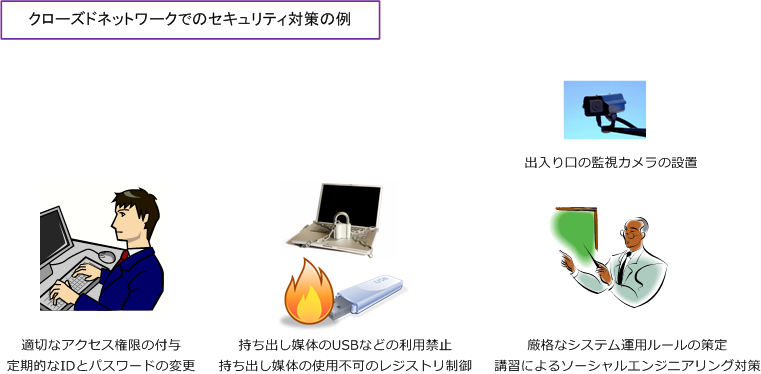
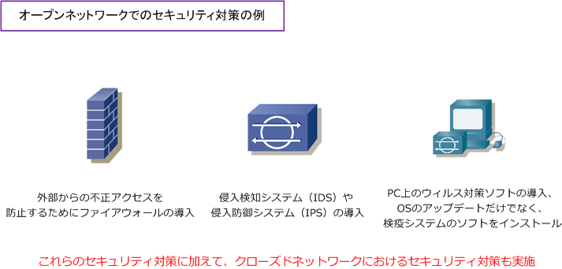

Network Security
ネットワークセキュリティとは
ネットワークセキュリティとは、デジタルの情報資産を保護するための防衛策、コンピュータネットワーク における安全運用を維持するための防衛策のことです。ネットワークセキュリティを確保するためには外部 からのクラッキングなどを防止したり、内部においてはデータの不正な持ち出しを防止する必要があります。
ネットワーク形態ごとのネットワークセキュリティ
ネットワークセキュリティの観点からネットワークの形態は大きく2つに分類することができます。1つは 直接的または間接的にインターネットや外部と接続しているオープンネットワークという形態。もう1つは 物理的にも、論理的にも、完全に外部と接続をしていないクローズドネットワークという形態です。形態に よってセキュリティ対策の方法は大きくことなります。それではそれぞれの形態ごとの対策を紹介します。
クローズドネットワークの場合は、そもそも不正利用者や産業スパイが入り込まなければ、無敵の安全性を 実現したネットワークなのですが「 内部のネットワークには必ず不正利用者がいる 」という前提で考える ことが大切です。不正利用者は、USBなどの持ち出し媒体などによる「データの不正な持ち出し」だけでは なく、例えばシステム管理者から話術や盗み聞きなどの社会的な手段によって、IDやパスワード情報を入手 すること（ソーシャルエンジニアリング）もあります。クローズドネットワークでは以下対策が効果的です。
・ 出入口の監視カメラの設置 ・ 適切なアクセス権限の付与、定期的なIDとパスワードの変更 ・ USBなどの利用禁止、レジストリ制御 ・ 厳格なシステム運用ルールの策定、講習によるソーシャルエンジニアリング対策

ネットワークシステムでは、IEEE802.1X認証（EAP-TLS）などを実装して不正端末の接続を行えないようにするのが一般的です。
オープンネットワークにおけるセキュリティ対策
オープンネットワークでは、インターネットなどの外部接続を行っていることから、外部から不正アクセスを 防止することが最も重要なセキュリティ対策となります。また、不正アクセスに対する情報漏洩だけでなくて 例えば、Webサイトのデータ改ざんを防止したり、外部からのウィルス感染などを防止することも重要な対策。 当然、クローズドネットワークのようなセキュリティ対策をオープンネットワークでも講じる必要があります。

VPNによる外部からのアクセスをセキュアにするためには、二要素認証の使用を検討する必要があります。
多要素認証（Multi-Factor Authentication）とは
多要素認証は、アクセス権限を得るために必要な本人確認のために、2つ以上の要素で認証する方式です。 多要素認証で使用される要素には大きく「 知識情報 」「 所持情報 」「 生体情報 」の3種類があります。 認証に必要な要素が2つだけの場合は二要素認証とも呼ばれます。※ 二要素認証は多要素認証の一部です。
| 3要素 | 説明 | 認証方法 |
|---|---|---|
| 知識情報 | 認証のために知っている情報 | ID/パスワード、PIN番号、秘密の質問 |
| 所持情報 | 認証のために持っている情報 | スマートフォン、ICカード、USBトークン ワンタイムパスワード、SMS認証、E-mail認証 |
| 生体情報 | 認証のための自身の身体的な情報 | 指紋認証、顔認証、網膜認証、静脈認証 |
二要素認証と二段階認証は意味が違います。二段階認証は、1種類の要素の2つの方法を使用している場合の 認証方式です。例えば、ID/パスワードを入力して認証した後、次に「秘密の質問」に応えて認証できた場合 それは「知識情報」の2つの認証方法を使用しただけであるので、二要素認証ではなく二段階認証と言います。